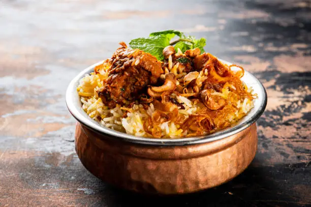
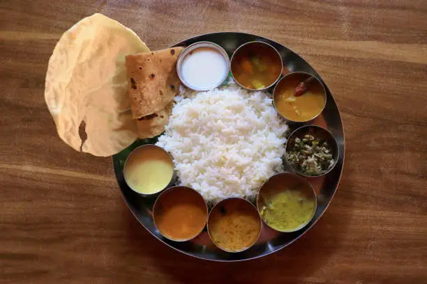

Biryani & South Indian Lunch Meals

🍛 Flavorful Chicken Biryani
Aromatic rice dish made with spiced chicken, saffron, and herbs.
Ingredients:
- 2 cups basmati rice
- 500g chicken (cut into pieces)
- 2 onions (sliced)
- 1 tomato (chopped)
- 1/2 cup yogurt
- 2 tsp biryani masala
- 1/2 tsp turmeric powder
- 1/2 tsp chili powder
- 1/2 cup mint & coriander leaves
- 2 cups water or chicken stock
- Salt & oil as needed
Instructions:
- Wash and soak basmati rice for 30 minutes.
- In a pot, heat oil and sauté onions until golden brown.
- Add chicken, tomatoes, spices, and cook until tender.
- Add yogurt and mix well, then layer with soaked rice.
- Pour water, cover, and cook on low flame for 20 minutes.
- Garnish with mint & coriander, serve hot with raita!

🍽️ South Indian Thali (Lunch Meal)
A wholesome meal with rice, sambar, rasam, poriyal, and papad.
Ingredients:
- 1 cup rice
- 1/2 cup toor dal (for sambar)
- 1 small tomato
- 1/2 cup tamarind extract (for rasam)
- 1/2 cup mixed vegetables (for poriyal)
- 1/2 tsp mustard seeds
- 2 dried red chilies
- Curry leaves
- Salt, turmeric, and chili powder to taste
- Ghee & papad for serving
Instructions:
- Cook rice and keep warm.
- Boil toor dal with turmeric and mash well.
- Prepare sambar by adding cooked dal, tamarind extract, and vegetables.
- Prepare rasam by boiling tamarind water with tomatoes and spices.
- For poriyal, sauté mustard seeds, curry leaves, and veggies.
- Serve everything with ghee, papad, and pickles!